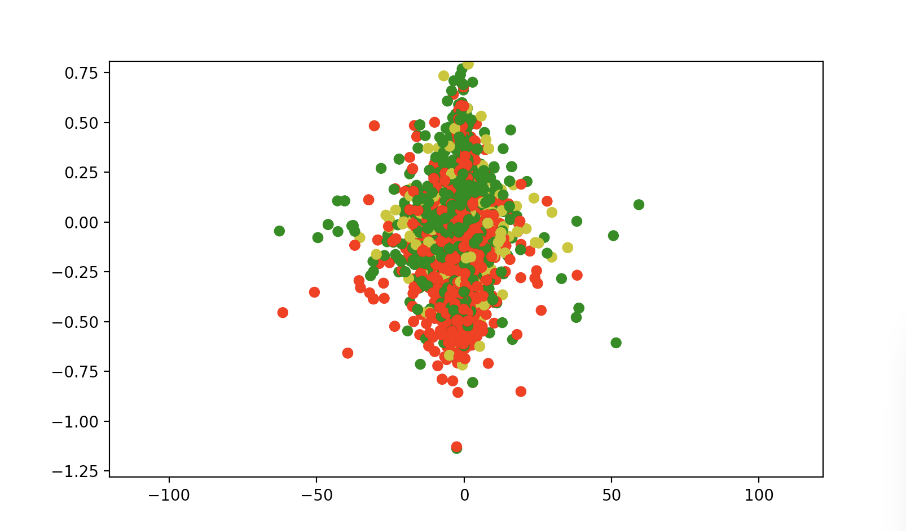

Machine learning algorithms are optimized to model statistical properties of the data they are fed. In much the same way humans develop a world view, the models of the world that these algorithms produce are a direct reflection of the data about the world they consume. As a result, data scientists go to great lengths to ensure that the data being fed into their algorithms represent an accurate view of the world. However, what happens if the data you feed an algorithm comes from a narrow and distorted view of the world. What happens if an algorithm’s understanding of English comes not from Wikipedia, but instead from Fox News.
Word embedding is a cutting-edge machine learning technique that generates a vector space of a vocabulary from sample text. The placement of words in this vector space capture the semantic meaning and relationships of words with remarkable accuracy. For example, in a well-trained model, by adding the vector value of [“King”] and [“Woman”] and subtracting out the value of [“Man”] the vector for [“Queen”] is returned. This analogy task makes clear the presence of a meaningful gender dimension, a highly complex concept captured by the model. Another remarkable finding showed that overlaying the vector spaces of different languages places words with similar meanings in similar locations in vector space, suggesting that the algorithm captures semantic meaning of words that transcend even language.

This powerful technique is extremely promising, and has become increasingly used in Natural Language Processing to understand the complex relationships of words across the many dimensions of language. However, to accurately define the vector space of the English language an accurate sample of it is required. Google has gone to great lengths to do just that, aggregating over 3 Billion words across the internet to build massive training sets from which they construct their models. In doing so they have captured a holistic view of the English language from which the algorithm can build its understanding of the world.
However, unlike Google's representative sample of the world, I fed a word2vec model your grandpa’s prescription dose of Sean Hannity, Tucker Carlson, and Bill O’Rielly. I collected every word spoken on Fox news from the past 15 years that the law would allow. In all, over 50 million words spoken on air formed the foundation of the vector space. The English language through the mouth piece of Fox News.
At a glance, this model was unremarkable and closely resembled the results Google had obtained with their open source model . The Fox News model could accurately group global religions and performed nearly as well on the capital-common-counties test as Google’s 3-billion-word model. The Fox News model even captured an unbiased understand of “President”, clustering the words Obama, Bush, Trump, and Regan most closely to one another.
Test after test seemed to suggest that a world view constructed entirely by Fox News was no different than one that sampled all of Wikipedia. Then I stumbled upon an analogy task that illuminated the distinctiveness of the word embedding I had built and the world view that informed it.
[“black”]+[”cop”]-[“white”]. Semantically it amounts to “White is to Cop as Black is to ____”. On Google’s model “chief” was returned as the top result. Fox News’ returned “murderer”.
The results that followed made the distinction no less obvious. “Killer”, “gang”, “criminal”, “rapist”, “shooter” and “thug” all showed up among the top results. I quickly wanted to make sure it wasn’t just the analogy so I performed the reverse: “Black is to Cop as White is to ____”. The results: “reporter”, “speaker”, “officer”, “gentleman”, “prosecutor”, “agent”. The only words with negative connotation that appeared were “hacker”, “gunman”, and “misdemeanor”.
Further analysis showed that this distinction was not only present in the analogy I had stumbled upon. Rather this racism was an inherent characteristic of word embedding built by the words spoken on Fox News for the past 15 years. The vector space had a strange, exaggerated dimension not present in the model built by Google: a racial dimension.
When closely examining this inflated racial dimension a mathematically quantifiable prejudice was evident. The distorted semantic understanding of English that the algorithm had developed lead it to create negative, violent associations with African-Americans and other minority groups. Fox’s language had created an overtly racist vision of reality not present in a representative sample of the English language. And while critical viewer of Sean Hannity wouldn’t necessarily deem this conclusion a revelation, there is something to be said about mathematically defining and quantifying the racism present in the world view Fox News constructs.
If the input data reflects stereotypes and biases, then the output of the learning algorithm also captures these stereotypes. And just as this model becomes a projection of the data that it consumes, so do we.